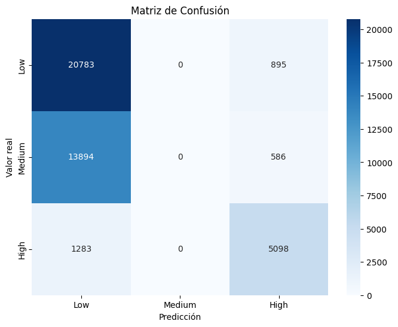
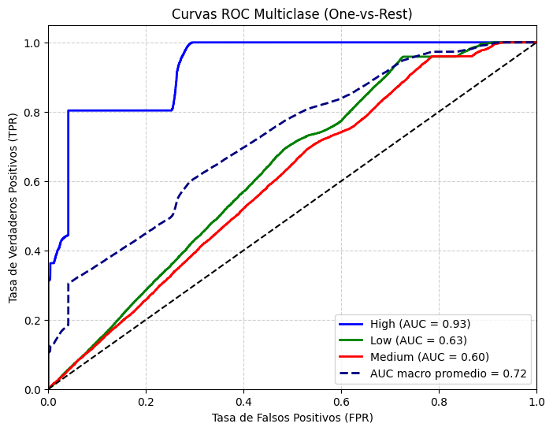
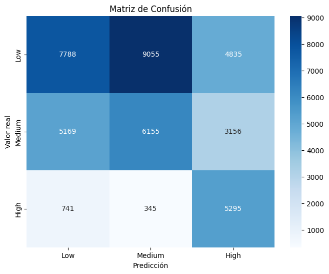
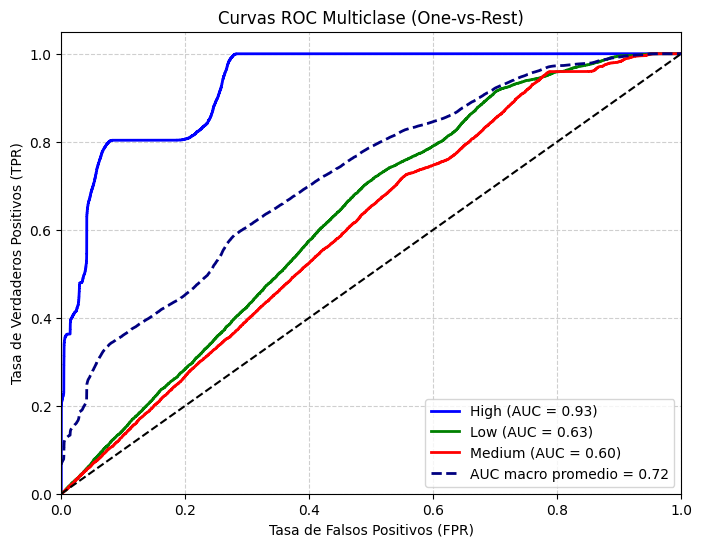
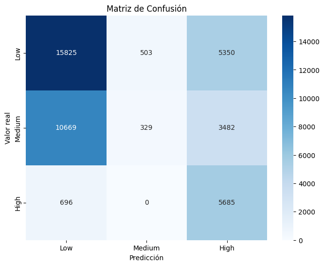
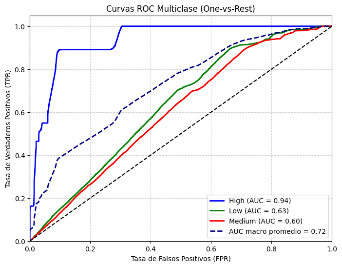
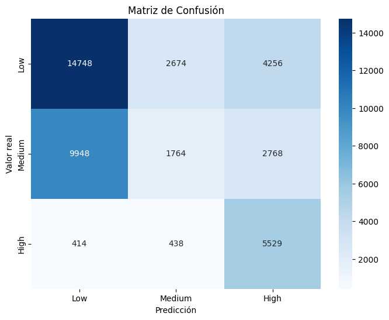
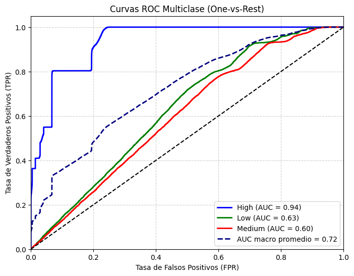

Logistic Model#
Importaciones#
import time
import pandas as pd
import warnings
warnings.filterwarnings('ignore')
from sklearn.linear_model import LogisticRegression
from sklearn.preprocessing import OneHotEncoder, StandardScaler, label_binarize
from sklearn.compose import ColumnTransformer
from sklearn.pipeline import Pipeline
from sklearn.metrics import (
accuracy_score, precision_score, recall_score, f1_score,
roc_auc_score, confusion_matrix, classification_report,
roc_curve, auc
)
from sklearn.model_selection import train_test_split, GridSearchCV,StratifiedKFold
from imblearn.over_sampling import SMOTE, ADASYN
from imblearn.pipeline import Pipeline as ImbPipeline
Cargado de datos#
X_train = pd.read_csv('data/X_train.csv')
y_train = pd.read_csv('data/y_train.csv')
X_test = pd.read_csv('data/X_test.csv')
y_test = pd.read_csv('data/y_test.csv')
X_train.shape, X_test.shape, y_train.shape, y_test.shape
((170152, 14), (42539, 14), (170152, 1), (42539, 1))
y_train = y_train.squeeze()
y_test = y_test.squeeze()
Funciones usadas#
from funciones import *
modelo logistico benchmark#
pipe_logit = crear_pipeline(LogisticRegression(max_iter=1000,random_state=0,multi_class='ovr',solver='saga',penalty='elasticnet',l1_ratio=0.5), tipo="normal")
start = time.time()
model_pipe=pipe_logit.fit(X_train,y_train)
end = time.time()
print(f"Tiempo de ejecución: {(end - start)/60:.2f} minutos")
Tiempo de ejecución: 0.09 minutos
se evalua el modelo benchmark para revisar sus metricas
evaluar_modelo(model_pipe,X_test,y_test)

Classification Report:
precision recall f1-score support
Low 0.58 0.96 0.72 21678
Medium 0.00 0.00 0.00 14480
High 0.77 0.80 0.79 6381
accuracy 0.61 42539
macro avg 0.45 0.59 0.50 42539
weighted avg 0.41 0.61 0.49 42539
{'Accuracy': 0.6084064035355791,
'Precision (macro)': 0.4509458401900453,
'Recall (macro)': 0.5858827466025186,
'F1-score (macro)': 0.5026281922491407,
'ROC-AUC': 0.7198865972747441}
Podemos observar que en la version normal del modelode logistic el modelo tiene buenos scores en Low y High sobre todo en la metrica de recall pero no detecta medium de ninguna manera, no hay scores de medium, lo que tambien se observa en su matriz de confusion ya que ningun elemento de medium fue predicho correctamente siendo la mayoria predichos como low erroneamente. esto se puede deber al desbalanceo del modelo
plot_roc_multiclass(model_pipe,X_test,y_test)

===== AUC por clase =====
High: 0.9310
Low: 0.6289
Medium: 0.5998
AUC macro promedio: 0.7199
({0: 0.9309939046792135, 1: 0.6288561383894864, 2: 0.5998097487555327},
0.7199048666102492)
El modelo muestra un excelente desempeño para la clase “High” (AUC = 0.9579), lo que indica una alta capacidad para identificar correctamente los casos de alto riesgo. Sin embargo, las clases “Low” (0.6377) y “Medium” (0.6061) presentan un rendimiento moderado a bajo, reflejando cierta dificultad para distinguir entre niveles de riesgo menos severos.
El AUC macro promedio (0.733) confirma un rendimiento global aceptable, aunque con margen de mejora en la diferenciación de las clases minoritarias.
Podemos observar que los AUC de las 3 clases en el modelo logistico normal benchmark tiene High es la que tiene mejor capacidad discriminatoria entre clases a diferencia del resto, con Low y medium tienen mas dificultades para separar las clases, con scores mas bajos de 0.64 y 0.61, por lo que se debe tomar en cuenta para mas adelante
balanceo#
Se aplico el balanceo mediante SMOTE y ADASYN para determinar si mejora el modelo
SMOTE#
pipe_logit_bal = crear_pipeline(LogisticRegression(max_iter=1000,random_state=0,multi_class='ovr',solver='saga',penalty='elasticnet',l1_ratio=0.5), tipo="balanceo_smote")
start = time.time()
model_bal=pipe_logit_bal.fit(X_train,y_train)
end = time.time()
print(f"Tiempo de ejecución: {(end - start)/60:.2f} minutos")
Tiempo de ejecución: 0.24 minutos
evaluar_modelo(model_bal,X_test,y_test)

Classification Report:
precision recall f1-score support
Low 0.57 0.36 0.44 21678
Medium 0.40 0.43 0.41 14480
High 0.40 0.83 0.54 6381
accuracy 0.45 42539
macro avg 0.45 0.54 0.46 42539
weighted avg 0.48 0.45 0.44 42539
{'Accuracy': 0.45224382331507557,
'Precision (macro)': 0.45426089098864003,
'Recall (macro)': 0.5380448450574663,
'F1-score (macro)': 0.4628730420567874,
'ROC-AUC': 0.721600346117508}
Podemos observar que ahora que el modelo no esta sesgado hacia Low su recall bajo pero el modelo generaliza de mejor manera, el modelo tambien ahora reconoce casi la mitad de los mediums lo cual es una mejora notable, ademas el recall de high se mantiene fuerte y hasta aumenta pero perdio algo de precision
plot_roc_multiclass(model_bal,X_test,y_test)

===== AUC por clase =====
High: 0.9322
Low: 0.6303
Medium: 0.6023
AUC macro promedio: 0.7216
({0: 0.932183216430554, 1: 0.6302879197958463, 2: 0.6023299021261237},
0.7216186700405132)
Podemos observar que los AUC de cada modelo no cambiaron demasiado a comparacion del modelo anterior, teniendo valores relativamente similares
ADASYN#
Se prueba con ADASYN para revisar si generan mejores resultados
pipe_logit_ads = crear_pipeline(LogisticRegression(max_iter=1000,random_state=0,multi_class='ovr',solver='saga',penalty='elasticnet',l1_ratio=0.5), tipo="balanceo_adasyn")
start = time.time()
model_ads=pipe_logit_ads.fit(X_train,y_train)
end = time.time()
print(f"Tiempo de ejecución: {(end - start)/60:.2f} minutos")
Tiempo de ejecución: 0.40 minutos
evaluar_modelo(model_ads,X_test,y_test)

Classification Report:
precision recall f1-score support
Low 0.58 0.73 0.65 21678
Medium 0.40 0.02 0.04 14480
High 0.39 0.89 0.54 6381
accuracy 0.51 42539
macro avg 0.46 0.55 0.41 42539
weighted avg 0.49 0.51 0.43 42539
{'Accuracy': 0.5133877148028868,
'Precision (macro)': 0.45635265863542757,
'Recall (macro)': 0.5478833164587168,
'F1-score (macro)': 0.4115690423880265,
'ROC-AUC': 0.7227956325063754}
Podemos observar que si bien el modelo se beneficio nuevamente de Low y High se dejo por de lado a medium en cuanto a recall, casi nunca se detecta dicha clase por lo que ADASYN reforzo la deteccion de High pero dejo de lado a medium en cuanto a recall se refiere, por lo que a comparacion de SMOTE al realizar el balanceo no pudo mejorar la situacion
plot_roc_multiclass(model_ads,X_test,y_test)

===== AUC por clase =====
High: 0.9350
Low: 0.6307
Medium: 0.6027
AUC macro promedio: 0.7228
({0: 0.9350357304091702, 1: 0.6306896580836912, 2: 0.6026615090262645},
0.7228146465644232)
El modelo muestra un excelente desempeño para la clase “High” (AUC = 0.9610), lo que indica una alta capacidad para identificar correctamente los casos de alto riesgo. Sin embargo, las clases “Low” (0.6397) y “Medium” (0.6082) presentan un rendimiento moderado a bajo, reflejando cierta dificultad para distinguir entre niveles de riesgo menos severos.
El AUC macro promedio (0.736) confirma un rendimiento global aceptable, aunque con margen de mejora en la diferenciación de las clases minoritarias.
Class weight balanced#
pipe_logit_cw = crear_pipeline(LogisticRegression(max_iter=1000,random_state=0,multi_class='ovr',class_weight='balanced',penalty='elasticnet',l1_ratio=0.5,solver='saga'), tipo="normal")
start = time.time()
model_cw=pipe_logit_cw.fit(X_train,y_train)
end = time.time()
print(f"Tiempo de ejecución: {(end - start)/60:.2f} minutos")
Tiempo de ejecución: 0.10 minutos
evaluar_modelo(model_cw,X_test,y_test)

Classification Report:
precision recall f1-score support
Low 0.59 0.68 0.63 21678
Medium 0.36 0.12 0.18 14480
High 0.44 0.87 0.58 6381
accuracy 0.52 42539
macro avg 0.46 0.56 0.47 42539
weighted avg 0.49 0.52 0.47 42539
{'Accuracy': 0.5181362984555349,
'Precision (macro)': 0.46318671617156526,
'Recall (macro)': 0.5562076252057193,
'F1-score (macro)': 0.46557195038354626,
'ROC-AUC': 0.7225153830984881}
Podemos observar que si bien, el recall de Low y High es excelente y medium no es 0 igual tiene scores bastante bajos en comparacion a las otras clases, con medium en 0.15 de recall y low en 0.73
plot_roc_multiclass(model_cw,X_test,y_test)

===== AUC por clase =====
High: 0.9365
Low: 0.6296
Medium: 0.6015
AUC macro promedio: 0.7225
({0: 0.936485079904796, 1: 0.6295705243099494, 2: 0.6014905450807189},
0.7225344016661113)
El modelo muestra un excelente desempeño para la clase “High” (AUC = 0.9619), lo que indica una alta capacidad para identificar correctamente los casos de alto riesgo. Sin embargo, las clases “Low” (0.6377) y “Medium” (0.6070) presentan un rendimiento moderado a bajo, reflejando cierta dificultad para distinguir entre niveles de riesgo menos severos.
El AUC macro promedio (0.735) confirma un rendimiento global aceptable, aunque con margen de mejora en la diferenciación de las clases minoritarias.
como podemos ver, en si no es que cambie mucho en comparacion a los anteriores
Tabla comparativa#
LogisticRegression |
Accuracy |
Precision_macro |
Recall_macro |
F1-macro |
AUC |
Tiempo en minutos |
|---|---|---|---|---|---|---|
Benchmark |
0.59 |
0.42 |
0.57 |
0.48 |
0.73 |
0.10 |
SMOTE |
0.51 |
0.53 |
0.61 |
0.55 |
0.74 |
0.23 |
ADASYN |
0.58 |
0.51 |
0.60 |
0.48 |
0.74 |
0.36 |
class_weight |
0.56 |
0.52 |
0.61 |
0.53 |
0.73 |
0.09 |
Entre los modelos de LogisticRegression realizados se pudo observar que SMOTE es el mejor de entre todos, teniendo un mejor balance entre todas las clases en general y tiene mayor recall a comparacion de los otros